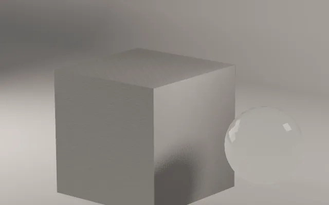
Collegato al CAD
Salvi di nuovo dal CAD e Vitrum rilegge il file. Materiali, luci e fotocamere restano.
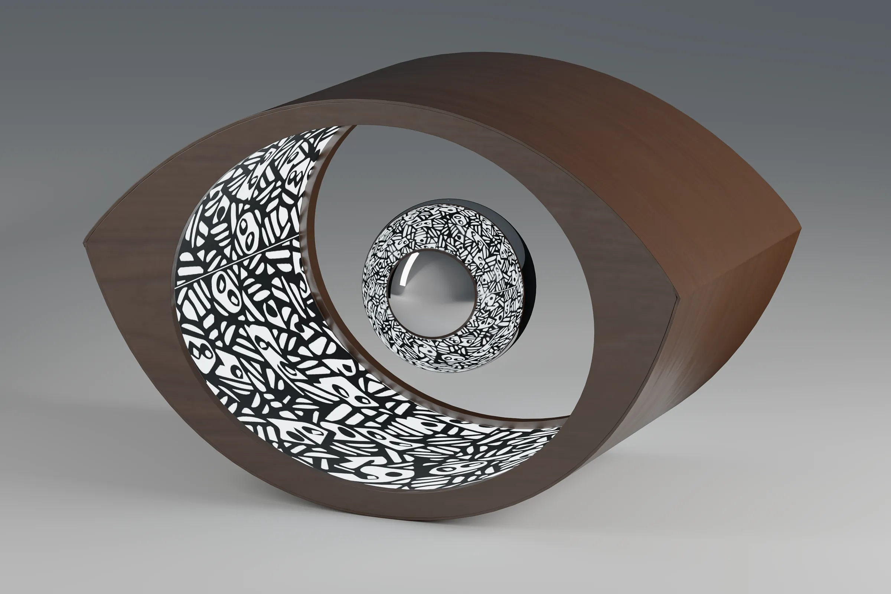
Apri lo STEP, scegli materiali, luci e inquadratura. Vitrum fa il resto, con il motore di render di Blender.
Apri il file del CAD. Il prodotto si appoggia da solo sul fondale, in millimetri, con le parti già divise.
Più di settanta materiali veri, stampe e loghi che seguono le curve, e un editor a nodi.
Set fotografici pronti, beauty dish e ombrello, profili IES e set atmosfera colorati.
Obiettivi in mm e inquadrature pronte: Tre quarti, Macro, Radente, Eroe.
Il video come fila di momenti: giro, esploso, passaggio di luce. Esce in MP4.
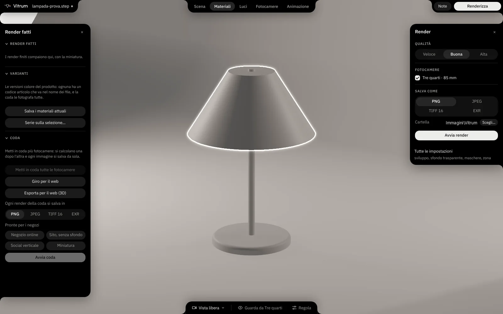
La lampada Oopar: noce, cromo e un rivestimento con motivo Madhubani. 3000 × 2000 px, qualità Buona, circa 25 minuti a immagine.
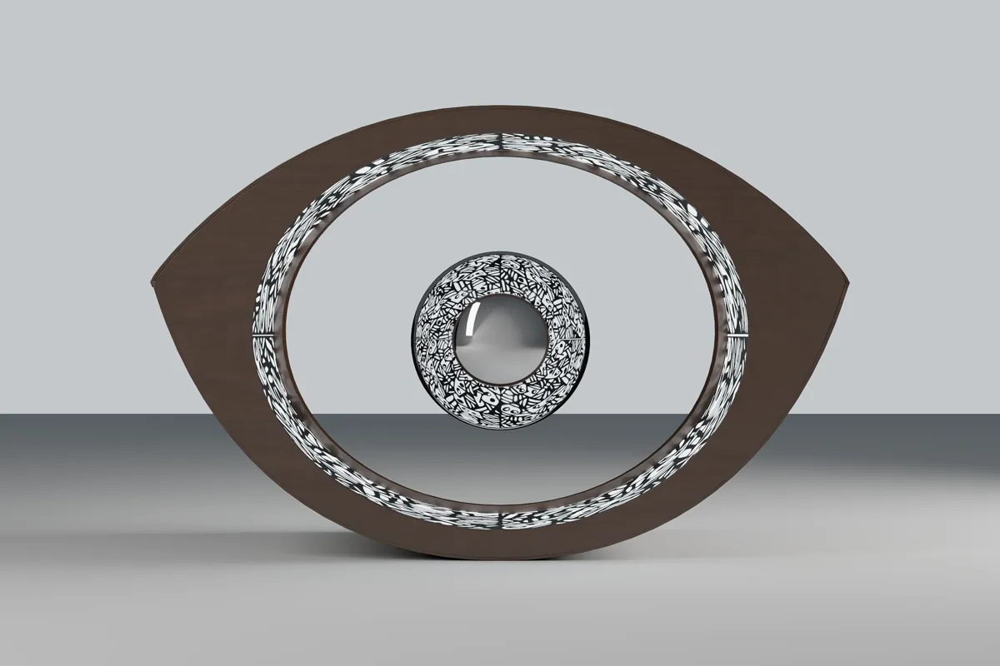
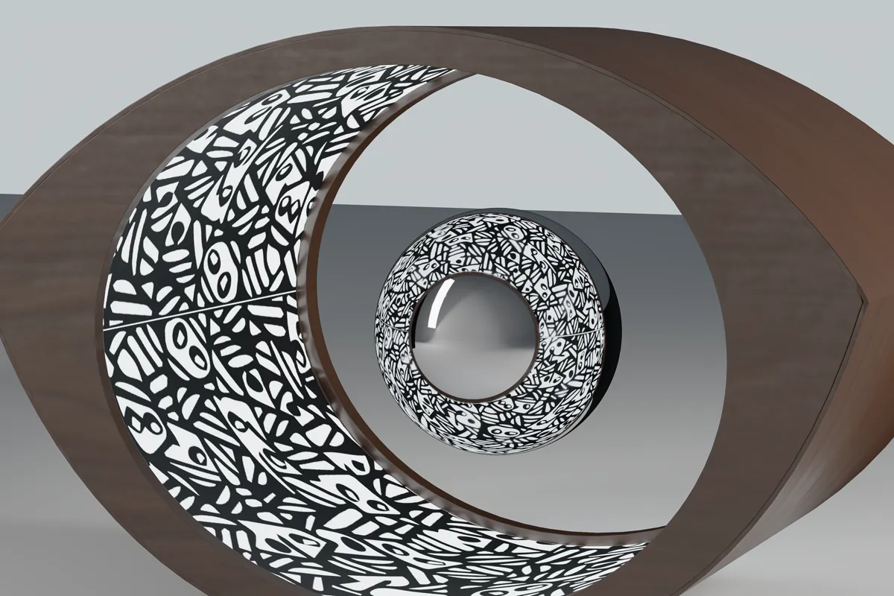

Salvi di nuovo dal CAD e Vitrum rilegge il file. Materiali, luci e fotocamere restano.
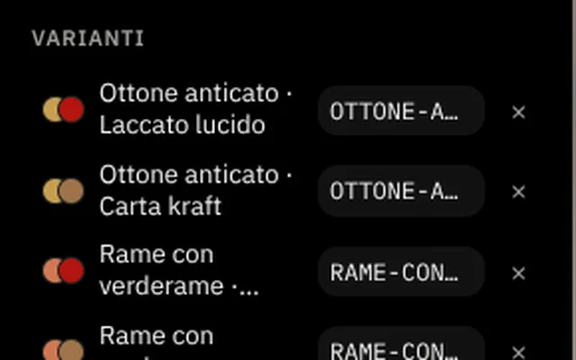
Ogni combinazione di materiali diventa una variante con il suo codice articolo, fotografata in coda.
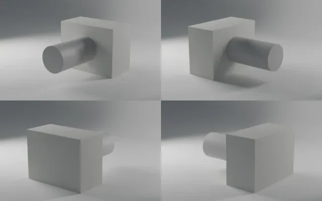
Il prodotto ruota come su un piatto e Vitrum prepara la cartella da mettere sul sito.
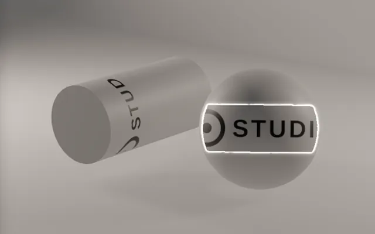
Loghi e decori che si avvolgono su superfici piane, cilindriche o curve.
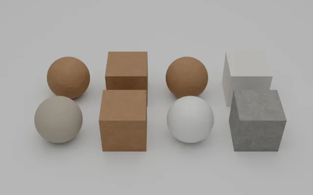
Legni da impiallacciature fotografate, metalli, plastiche, tessuti, vetri e liquidi.
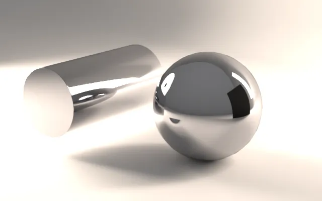
Beauty dish, ombrello, bandiere e cartoncini nel riflesso, come su un set vero.
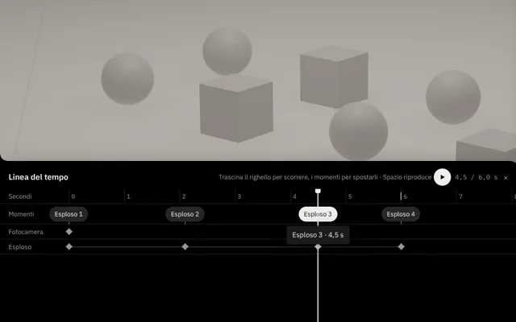
Ricette pronte e una linea del tempo per video di prodotto in PNG e MP4.
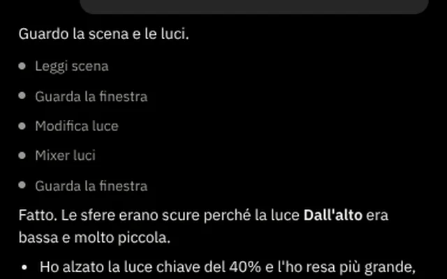
Descrivi la scena e Claude la prepara con i comandi di Vitrum. Ogni passo si annulla.
Per SolidWorks, Inventor e SketchUp Vitrum ti dice da dove esportare.
Formati pronti per negozio online, sito senza sfondo, social verticale e miniatura.
Si installa come un programma qualsiasi e si aggiorna da solo.